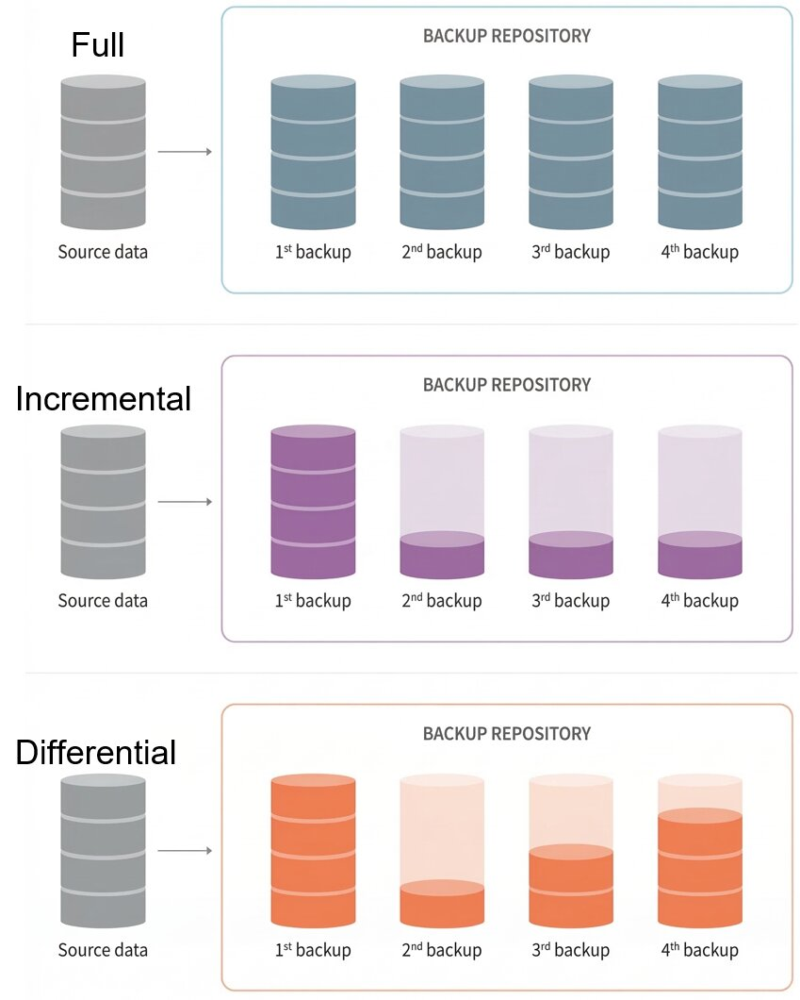
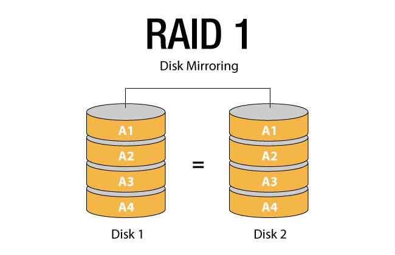

Backup & Mirroring
Data loss can happen due to hardware failure, malware, or human error. Implementing robust backup strategies and disk mirroring ensures data availability and continuous system operation.
Learning Objectives
- 11.1.2.2 Evaluate different backup strategies and storage mediums
- 11.1.2.3 Explain the purpose and operation of disk mirroring (RAID 1)
Expert Explanation: Backup Strategies
Conceptual Anchor
The Spare Key Analogy
A backup is like making a spare key for your house. If you lose the original,
you can still get in.
Disk mirroring is like having two identical locks on the door that turn
simultaneously with one key. If one lock jams, the door still opens instantly.
Rules & Theory
What is a Backup?
A backup is a copy of data stored in a separate location, used to restore the original data if it is lost, corrupted, or destroyed.
Backup Strategies (Types of Backups)
Organizations use different strategies to balance storage space, backup time, and restoration speed.
| Type | Description | Pros & Cons |
|---|---|---|
| Full Backup | Copies all selected files and folders every time. | Pro: Fastest to restore. Con: Slowest to backup, takes most storage space. |
| Incremental Backup | Copies only the data that has changed since the last backup (of any type). | Pro: Fastest to backup, least storage space. Con: Slowest to restore (requires full + all subsequent incrementals). |
| Differential Backup | Copies all data that has changed since the last Full backup. | Pro: Faster restore than incremental. Con: Backups grow larger each day until the next Full backup. |

Visualizing data accumulation in different backup strategies over a week.
Storage Mediums
| Medium | Best For | Characteristics |
|---|---|---|
| External HDD / SSD | Personal users, small businesses | Fast, portable, relatively cheap, but can be physically damaged or lost. |
| Magnetic Tape | Large corporations, long-term archives | Huge capacity, very cheap per GB, highly durable. Slow serial access (sequential reading). |
| Cloud Storage | Everyone (off-site backup) | Protects against local disasters (fire, flood). Requires internet. Ongoing subscription cost. |
Backup vs Archiving
Backup
A copy of active, working data.
Purpose: Quick restoration in case of accidental deletion, hardware failure, or corruption.
Analogy: A spare tire in your car.
Archiving
Moving inactive (historical) data to long-term storage.
Purpose: Free up space on primary drives and retain data for legal/compliance reasons.
Analogy: Moving old documents to a filing cabinet in the basement.
What is Disk Mirroring (RAID 1)?
Disk mirroring (commonly implemented as RAID 1 - Redundant Array of Independent Disks) is a technique where data is written to two or more identical hard drives simultaneously.

RAID 1 Architecture: Data stream splits and writes identically to Disk 0 and Disk 1.
- High Availability: If one drive fails, the system continues to operate from the second drive without any downtime.
- Read Speed: Read operations can be faster (data can be read from both disks simultaneously).
- Write Speed: Slightly slower or equal, as data must be written twice.
- Cost: High storage cost (you buy 2TB of drives but only get 1TB of usable space).
The 3-2-1 Backup Rule
An industry-standard strategy for data protection:
- Keep 3 copies of your data (1 original + 2 backups).
- Store them on 2 different types of media (e.g., local NAS and Cloud).
- Keep 1 copy off-site (protects against physical disasters like fire or theft).
Expert Explanation: Mirroring
Worked Examples & Scenarios
1 Scenario: The Ransomware Attack
Scenario: A school's main server is infected with ransomware on a Wednesday afternoon, encrypting all files. They have a NAS (Network Attached Storage) on the same network doing daily backups.
Analysis: If the NAS is accessible from the main network, the ransomware likely encrypted the backups too. This highlights the need for off-site or air-gapped backups (like disconnected external drives or cloud storage with versioning).
2 Scenario: Bank Database Strategy
Scenario: A bank processes millions of transactions daily. They need a backup strategy that ensures minimal data loss and relatively fast recovery.
Solution:
- Full Backup: Once a week (e.g., Sunday at 2 AM) to magnetic tape for off-site storage.
- Differential Backup: Every night at 1 AM. This allows faster restoration than incremental (only need Sunday's Full + the latest Differential) while saving time compared to daily Full backups.
- Disk Mirroring (RAID 1 or higher): On live database servers to ensure zero downtime if a physical hard drive crashes during business hours.
3 Identifying the Difference: RAID vs Backup
Scenario: A student deletes their coursework project by mistake. The school server uses RAID 1 (Disk Mirroring).
Analysis: RAID 1 will not save the student. The deletion command is instantly mirrored to both drives. A Backup is required to restore an accidentally deleted file.
Common Pitfalls
Thinking Mirroring is a Backup
Mirroring (RAID 1) protects against hardware failure (a broken hard drive). It does NOT protect against malware, accidental deletion, or file corruption, because the mistake is instantly copied to the second drive.
Tasks
State the 3-2-1 backup rule.
Explain the difference between an Incremental backup and a Differential backup. Which one is faster to restore?
A video production company generates 500GB of new footage daily. Recommend a suitable backup storage medium and justify your choice.
A company decides to stop taking backups because they have implemented RAID 1 disk mirroring. Explain why this is a dangerous decision.
Self-Check Quiz
Q1: What is the main advantage of an Incremental backup?
Q2: Does RAID 1 protect against accidental file deletion?
Q3: What type of storage medium is best for long-term, off-site archiving of massive amounts of data?